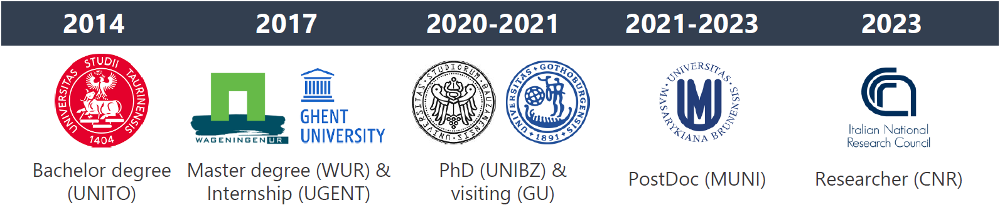

CV (in brief)
Education and Employment History

Researcher (III level) (2023 - current) at CNR-IRET - National Research Council of Italy, Pisa (Italy);
Postdoctoral fellow (2021 - 2023) at the Vegetation Science Group of the Department of Botany and Zoology, Masaryk University, Brno (Czech Republic);
PhD in Mountain Environment & Agriculture (2017 - 2021) cum laude at the Free University of Bozen-Bolzano, Bolzano (Italy). Thesis title: “Meta-analyses upon the intraspecific plant trait variability within the environmental and geographic space” (supervisor: Camilla Wellstein);
Visiting PhD student (2020, 6 months) at the Antonelli Lab, Gothenburg Global Biodiversity Centre - University of Gothenburg, Gothenburg (Sweden);MSc Environmental Science (2015 - 2017) at Wageningen University & Research, Wageningen (The Netherlands). MSc thesis at the ESA group: “Plant biodiversity loss following increased atmospheric nitrogen deposition: A systematic review” (supervisors: Wim De Vries; Rob Alkemade);
Intern (MSc Internship) (2017, 4 months) at Forest & Nature Lab – Department of Forest and Water Management – Ghent University, Ghent (Belgium);BSc Forest Science (2011 - 2014) at University of Turin, Turin (Italy) 110 cum laude. Thesis title (in Italian): “Redox reactions in the soil and their environmental significance” (supervisor: Franco Ajmone Marsan).
Main publications
Midolo, G., Mendez-Castro, F. & Ottaviani, G. (2023) Why studying the response of trait coordination to insularity matters? Journal of Biogeography, 00, 1–9. https://doi.org/10.1111/JBI.14706
Midolo, G., Herben, T., Axmanová, I., Marcenò, C., Pätsch, R., Bruelheide, H., ... & Chytrý, M. (2022). Disturbance indicator values for European plants. Global Ecology and Biogeography, 32(1), 24-34. https://doi.org/10.1111/geb.13603
Midolo, G., Kuss, P., & Wellstein, C. (2021). Land use and water availability drive community-level plant functional diversity of grasslands along a temperature gradient in the Swiss Alps. Science of The Total Environment, 764, 142888. https://doi.org/10.1016/j.scitotenv.2020.142888
Midolo, G., Wellstein, C., & Faurby, S. (2021). Individual fitness is decoupled from coarse‐scale probability of occurrence in North American trees. Ecography, 44(5), 789-801. https://doi.org/10.1111/ecog.05446
Midolo, G., & Wellstein, C. (2020). Plant performance and survival across transplant experiments depend upon temperature and precipitation change along elevation. Journal of Ecology, 108(5), 2107-2120 https://doi.org/10.1111/1365-2745.13387
Midolo, G., De Frenne, P., Hölzel, N., & Wellstein, C. (2019). Global patterns of intraspecific leaf trait responses to elevation. Global Change Biology, 25(7), 2485–2498. https://doi.org/10.1111/gcb.14646
Midolo, G., Alkemade, R., Schipper, A. M., Benítez‐López, A., Perring, M. P., & de Vries, W. (2019). Impacts of nitrogen addition on plant species richness and abundance: A global meta‐analysis. Global Ecology and Biogeography, 28(3), 398–413. https://doi.org/10.1111/geb.12856